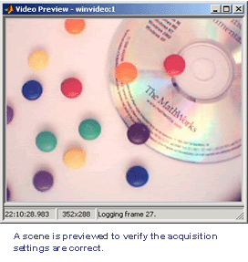

Image Acquisition Toolbox Tutorials
| Image Acquisition Toolbox Tutorials |
These tutorials are an introduction for configuring an acquisition and logging data from
an image acquisition device.
Logging Data To Memory
Previewing live data using the PREVIEW function.
Single frame acquisition using the GETSNAPSHOT function.
Multi-frame acquisition using the START and STOP functions.
Retrieving logged data using the GETDATA function.
Logging Data To Disk
Exploring disk logging properties and functions.
Working With Triggers
Exploring device-specific trigger configurations using the TRIGGERINFO and TRIGGERCONFIG functions.
Using immediate triggers.
Using manual triggers.
Using device-specific hardware triggers.
